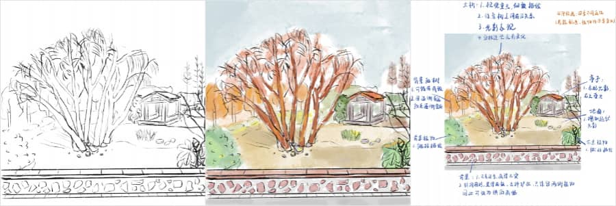

Vol.46：原创悖论、国庆见闻
Hello，欢迎阅读我的周刊第 46 期。
本期主要是分享最近画画时遇到的困境和国庆放假回重庆期间的一些感想。
原创悖论

最近画画又遇到瓶颈了，稍微观察一下最近发布的画就可以发现，近几个月我基本上只发了二十四节气系列的简笔画，不是我不想发其他的，而是我画不出来。除了因为花的时间少，还因为太想画原创作品，但是很多技法还不会，经常画到一半就停了。
这一幅是在公园画的速写，本来想回家后二次创作的，还特意写了复盘，但总是画不出来自己心里的画面，所以就搁置了。

另一幅是画的照片，照片是之前在厦门一个公园入口处的天桥上拍的，我觉得构图很适合画画，有视线引导，还刚好有辆车从隧道里出来，动态感也有了。

第一次尝试，我总是想极力地还原照片，结果细节太多，自己基础不牢固，画完草稿就不想画了。

第二次尝试，则想发散思维，把这里想象成海底隧道，把车想象成从隧道游出来的鱼，鱼背上骑着一个小精灵，周围有珊瑚和五彩的泡泡，结果画出来还是不如人意。

和朋友聊起最近画画的困境，他说，去临摹吧，这就和练字一样，谁又能一开始就写得很好呢，不要怕临摹，哪个写字好的没有用过字帖呢。 说得很有道理，那些绘画大师前期也是临摹别人的作品，才逐渐找到自己的技法和风格。
刚好今天在 David Perell 的文章里看到一条现代生活悖论，就叫做「原创悖论」：
历史上伟大的艺术家都是通过模仿他人（梵高模仿米勒），然后才找到自己的风格和特色。我们在模仿他人的途中遇见自己，并随着时间的推移发现自己的独特性。
国庆见闻
这周是国庆，有一个小长假，于是回了趟重庆，有很多事我觉得都值得记录下来。
能住在她家的朋友。 因为回重庆想在主城区玩两天，在重庆工作的朋友知道了，直接让我把酒店退了，去住她家，然后她自己回老家了，房子就留给我住，这样的情谊能不令人感动吗。这位朋友总是能给我这种安心感，即使多年不见，一见到还是有聊不完的话，记得上次我回重庆也是这样，晚上到重庆直接去住的她家，和另外一位朋友，我们三个挤在一张床上，聊到睁不开眼还不愿意睡😂，以至于朋友第二天上班还打瞌睡。
能一大早给我们烤月饼的朋友。 这就是三个挤在同一张床的另外一位朋友，我们三个是高中同学，都回老家后约出来玩，结果这位朋友一大早起来做月饼，做了流心月饼，还带着热气，再次感动到，而且是真好吃，比买的好吃多了。
家里，是永远随时欢迎你回去的地方。 每次回去，无论多晚，总有做好的饭菜等着我。
重庆美食。 这次回去吃了很多好吃的，串串、烤鱼、重庆小面、重庆小吃，随便去居民区路边一家人多的店，就肯定好吃，而且便宜。
科技的方便之处。 因为爷爷奶奶年纪大了，给他们打电话经常都听不到，让人担心，所以这次回去在客厅安了个摄像头，告诉爷爷奶奶我能看到他们，还能和他们通话，他们觉得很神奇。回到上海后，第一次叫他们，他们立刻反应过来了，笑着对着摄像头说话，还感叹，现在科技真发达，怎么能这么方便，爷爷还对奶奶说，看，以后你再骂我，孙女都能知道了。
订阅： 本站所有内容首发于 tangweijuan.com，支持 RSS 订阅，同步更新于微信公众号「Afterwork Time」，欢迎扫描下方二维码订阅。